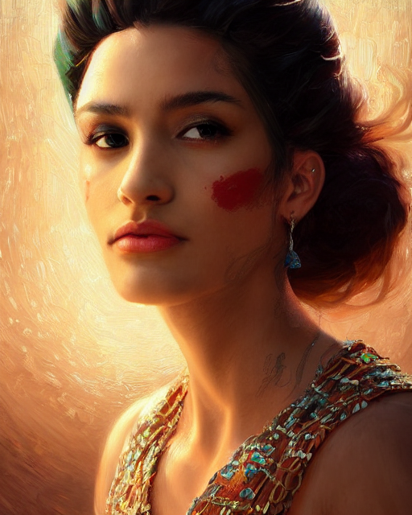
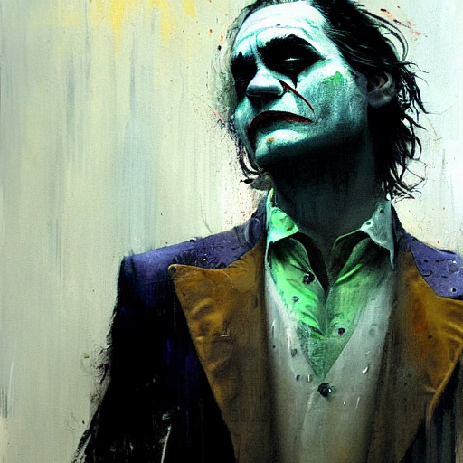
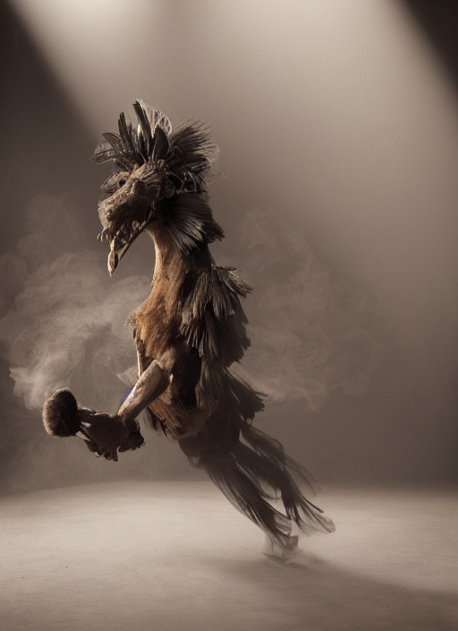
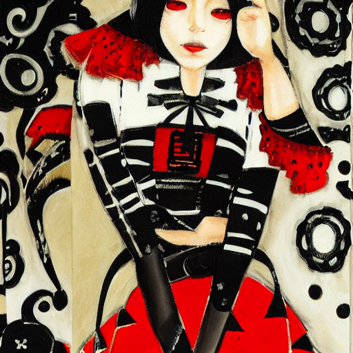

In this post I'll report experiments with Stable diffusion, a machine learning algorithm that allows you to create images from text.
You can also visit the
Sentient AI collection
and the
Hell collection .

Key phrase: "Pride_as_a_beautiful_latino_princess_gorgeous_portrait_powerful_intricate_beautiful_masterpiece_elegant_volumetric_lighting_back_lighting"

Key phrase: "painting_of_Joaquin_Phoenix_as_the_joker_dancing_in_the_rain_by_Jeremy_Mann_detailed_stylized_loose_brush_strokes_intricate_realistic_exaggerate"

Key phrase: "a_Photorealistic_dramatic_hyper_realistic_render_of_a_glamorous_Mexican_Nahual_smoke_animal_by_Ken_Brower_and_Deborah_Ory_Lois_Greenfield_Beautif"

Key phrase: "Yoshitaka_Amano_style_portrait_of_an_mexican_mariachi_girl_with_short_white_hair_and_eyepatch_wearing_suit_with_patterns_abstract_black_and_white_backgrou"Key phrase: "painting_of_patients_partying_outside_the_dance_club_during_a_war_by_Jeremy_Mann_and_Jason_Jenicke_highly_detailed_stylized_loose_brush_strokes"